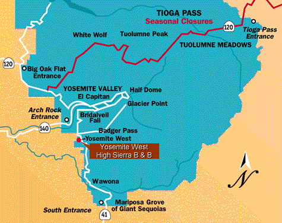
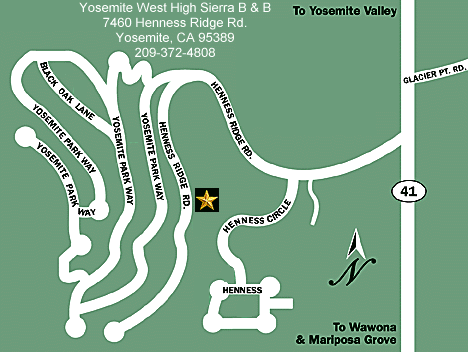

Great Location!
Located inside the gates of
Yosemite National Park
 Directions from Yosemite Valley:
10 MILES FROM YOSEMITE VALLEY, EXIT VALLEY TO HWY. 41 SOUTH TOWARD WAWONA AND FRESNO.
CONTINUE PAST BRIDALVEIL FALL AND THROUGH TUNNEL, CONTINUE BRIEFLY PAST CHINQUAPIN, PREPARE TO TURN RIGHT ¼ MILE PAST TURNOFF TO GLACIER POINT ROAD .
LOOK FOR SIGN: "YOSEMITE WEST PRIVATE DEVELOPMENT".
TURN RIGHT TO YOSEMITE WEST. YOU WILL BE ON HENNESS RIDGE ROAD.
OUR ADDRESS IS: 7460 HENNESS RIDGE ROAD.
GO 0.9 MILES ON HENNESS RIDGE ROAD UNTIL YOU SEE THE MAILBOXES ON YOUR RIGHT, THEN BEAR RIGHT. GO AN ADDITIONAL 0.3 MILES AND TURN LEFT, STAYING ON HENNESS RIDGE ROAD, GO 0.3 MILES, LOOK FOR LARGE WOODEN HOME ON YOUR LEFT WITH LOGS. PARK IN PAVED PARKING ADJACENT TO STREET.
Directions from Fresno and Oakhurst:
SOUTH ENTRANCE OF YOSEMITE NATIONAL PARK, 34 MILES FROM OAKHURST. TURN LEFT AFTER ENTERING YOSEMITE NATIONAL PARK. CONTINUE PAST WAWONA 11.5 MILES.
LOOK FOR SIGN: "YOSEMITE WEST PRIVATE DEVELOPMENT". TURN LEFT TO YOSEMITE WEST (IF YOU GET TO JUNCTION OF HWY. 41 AND GLACIER POINT ROAD-YOU HAVE PASSED TURNOFF). YOU WILL BE ON HENNESS RIDGE ROAD.
OUR ADDRESS IS: 7460 HENNESS RIDGE ROAD.
GO 0.9 MILES ON HENNESS RIDGE ROAD UNTIL YOU SEE THE MAILBOXES ON YOUR RIGHT THEN BEAR RIGHT. GO AN ADDITIONAL 0.3 MILES AND TURN LEFT, STAYING ON HENNESS RIDGE ROAD, GO 0.3 MILES, LOOK FOR LARGE WOOD HOME ON YOUR LEFT WITH LOGS. PARK IN PAVED PARKING ADJACENT TO STREET.
Central Location!
Drive 15 minutes North to the Breathtaking Tunnel View or Yosemite Valley
25 minutes East to Glacier Point
30 minutes South to Mariposa Grove of Giant Sequoias
All in different direcions from the B&B
Yosemite West is the only location that is a 15-30 minute drive to the most popular areas of the park. Due to the topography of the Sierra Nevada Mountains there are limited roads connecting the areas. If you are not familiar with the area please be aware that we have had guests who have stayed 25 miles away from some of these areas “as the crow flies” or by GPS coordinates to find that they had to drive over 2-3 hours each way to navigate to their destination.